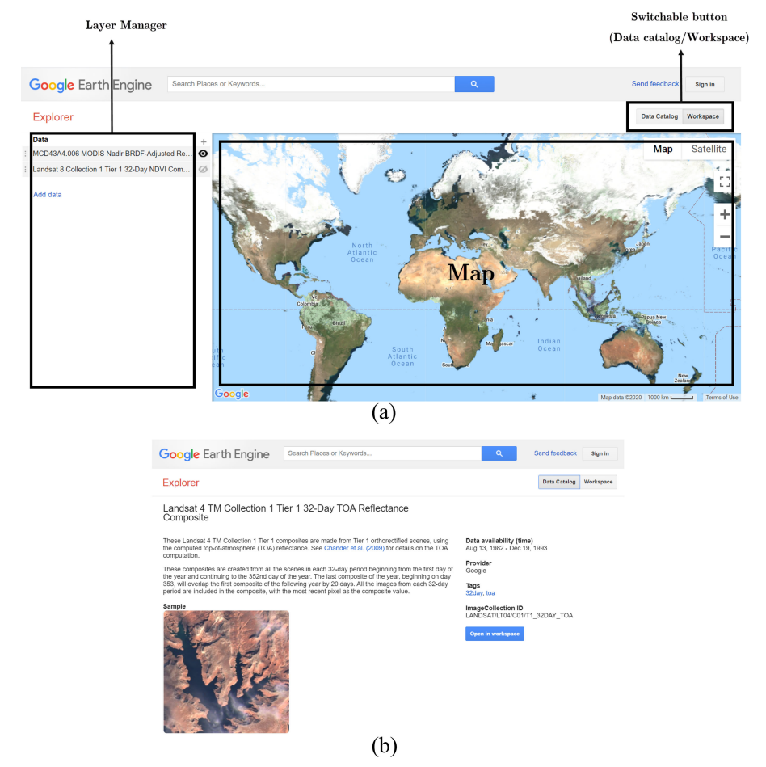
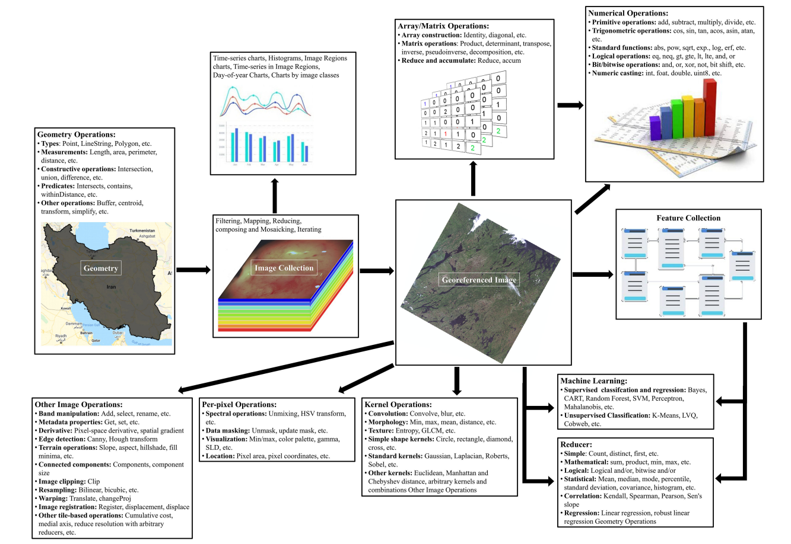
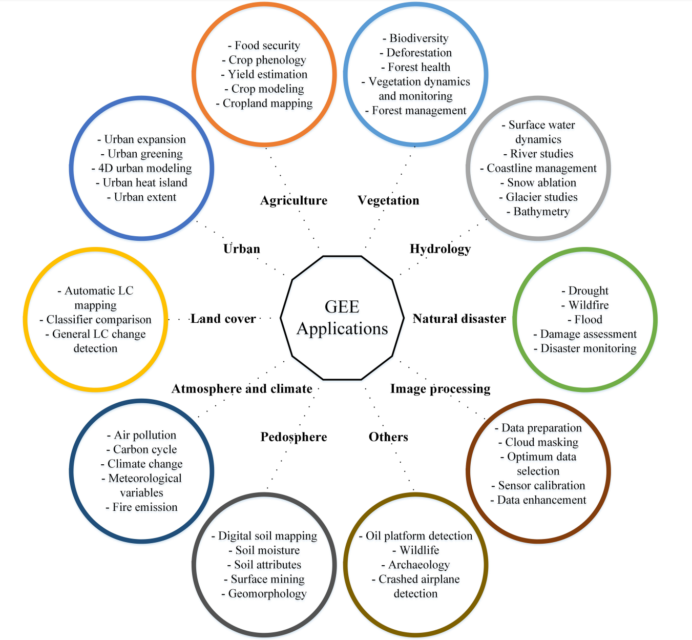
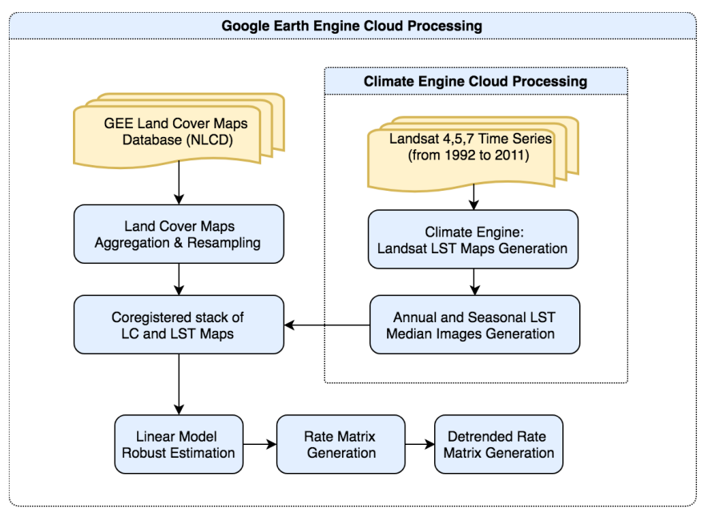

5 Introduction to Google Earth Engine
5.1 Summary
This week’s focus was on understanding Google Earth Engine (GEE), a robust geospatial processing service that has revolutionized the way we perform large-scale environmental analyses. It provides the capability to analyze vast datasets on a planetary scale, delivering results rapidly, which is a significant advancement over traditional methods.
| Feature Category | Detailed Description |
|---|---|
| Data Processing Capabilities | - Geospatial Analysis Scale: Allows users to perform geospatial analysis at a planetary scale. - Data Storage: Data is stored on servers, facilitating the processing of large datasets. - Code Execution: Users’ written code can be directly applied to data. |
| Data Types | - Images (Raster Data): Referred to as - Features (Vector Data): Known as - Image Collection: Called - Feature Collection: Termed |
| Technical Aspects | - JavaScript-Based: GEE uses the JavaScript language, with similarities and differences compared to Python and R. - Client vs. Server Side: Differentiates between code running in the browser (client-side) and code running on the server. - Mapping Functions and Loops: Recommends using mapping functions over loops for server-side operations. |
| Practical Functions | - Data Manipulation: GEE offers concepts of objects, classes, and methods for easy loading and manipulation of data. - Spatial Operations: Includes geometry operations, machine learning, regression analysis, etc. - Image Reduction: GEE provides functions for aggregating data, performing regional statistics, and conducting neighborhood analysis. |
Earth Engine Explorer platform. (a) Workspace. (b) Data Catalog Source: Amani et al. (2020)
5.1.1 Key Concepts and Terminology
GEE operates on two main types of data: raster (Image) and vector (Feature), each serving different purposes but essential for comprehensive spatial analysis. An Image in GEE refers to raster data with bands, while a Feature represents vector data comprising geometry and attributes. These are organized into collections for efficient processing: ImageCollection for rasters and FeatureCollection for vectors.
5.1.2 GEE’s Programming Language: JavaScript
GEE utilizes JavaScript for coding, which introduces a few distinctions from other programming languages like Python and R. Variables are declared with var, and code blocks end with a semicolon (;). JavaScript objects, similar to dictionaries, are crucial for structuring data and functions within GEE.
5.1.3 Practical Applications and Functions in GEE

Overview of different supporting functions within GEE Source: Amani et al. (2020)
GEE excels in various geospatial operations, from simple mappings to complex machine learning models. This versatility is showcased through functions like map() and reduce(), which allow for efficient data manipulation and analysis across large datasets. Specifically, reduce() functions are used to aggregate data, offering insights through statistical measures like mean, sum, and median over selected regions or neighborhoods.
5.1.4 Image and Feature Collections
A practical understanding of GEE involves working with image and feature collections. Filtering these collections by date, region, or specific attributes enables targeted analyses, such as examining land cover changes over time or spatial patterns in environmental variables.
5.1.5 Advanced Analysis: Regression and Reducers
GEE supports advanced statistical analyses, including linear regression models that help in understanding trends and relationships within geospatial data. The concept of reducers is central to GEE, facilitating the aggregation of data for comprehensive analysis. Reducers can be applied to both images and feature collections, enabling operations like zonal statistics, which are pivotal for environmental monitoring and assessment.
5.2 Applications
5.2.1 Expanding the Applications of Google Earth Engine
Comprehensive Utilization Across Disciplines
Amani et al. (2020) offer a deep dive into GEE’s utility across multiple disciplines, presenting it as a cloud computing platform that significantly eases the challenges of processing and analyzing large-scale geospatial data. From enabling detailed land cover classification and aiding in hydrological studies to supporting urban planning and enhancing natural disaster management, GEE’s capabilities are vast and varied.
Case Studies Highlighting GEE’s Versatility

Land Cover and Land Use Classification: Leveraging Landsat and Sentinel datasets, researchers have utilized GEE for detailed classification projects, demonstrating its capacity to handle vast datasets efficiently.
Hydrology and Water Resources Management: Utilizing GEE for water body monitoring and hydrological studies showcases its potential in managing and conserving water resources.
Urban Planning: GEE’s data and tools support urban development studies, helping planners and policymakers make informed decisions.
Natural Disaster Analysis: The platform’s real-time data processing capabilities are crucial for disaster response, offering insights into affected areas for timely intervention.
Enabling Global Environmental Monitoring
The review by Amani et al. (2020) indicates a significant trend towards employing GEE for global environmental monitoring tasks. Its ability to process petabytes of satellite imagery data makes it an unparalleled tool in observing Earth’s surface changes over time, crucial for understanding climate change impacts, deforestation rates, urban expansion, and more.
Implications for Future Research and Application
The wide range of applications covered in the review points to GEE’s growing importance in environmental science, geography, urban planning, and beyond. It underscores the platform’s role in democratizing access to big data analytics, enabling researchers, practitioners, and decision-makers to leverage satellite imagery for sustainable development goals.
5.2.2 Global Monitoring of SUHI through Google Earth Engine
5.2.2.1 Methodological Innovation

Ravanelli et al. (2018) developed a large-scale spatio-temporal procedure using GEE, benefiting from the Climate Engine tool to extract Land Surface Temperature (LST) from Landsat imagery. Their method represents a leap in analyzing the net effect of LC changes on SUHI by processing over 6,000 Landsat images spanning two decades. This approach underscores GEE’s unparalleled processing power and its role in simplifying the analysis of Geo Big Data.
5.2.2.2 Insights into Urban Sustainability
The study’s application to six metropolitan areas in the U.S. revealed a general increase in SUHI due to urban growth, providing a clear demonstration of urbanization’s impact on local climates. The ability of GEE to facilitate such a comprehensive analysis not only showcases the engine’s analytical capabilities but also offers invaluable insights for urban planning and sustainability efforts.
5.2.2.3 Practical Outcomes and Future Prospects
The successful application of GEE in monitoring SUHI across diverse urban environments sets a precedent for its potential in global environmental monitoring. The findings, while preliminary, pave the way for a possible global service on SUHI monitoring, which could significantly contribute to more sustainable urban development practices.
5.3 Reflection
This week’s learning experience has been a journey filled with both challenges and discoveries for me. At the outset of my introduction to GEE, I was incredibly excited about its vast data resources and analytical capabilities, yet I also felt puzzled about how to effectively utilize this powerful tool.
Over the course of the week, I have gained a preliminary understanding of the basic operations of GEE, access to datasets, and simple analysis. Through hands-on practice, I gradually became familiar with the GEE interface and programming syntax, even though this required me to spend additional time learning the basics of JavaScript. I also became aware of the complexities of remote sensing data analysis and the importance of data quality and applicability issues when using GEE for environmental monitoring and land change analysis.
In summary, this introductory week to GEE has been a challenging journey, but it has also opened a new perspective for me, deepening my understanding of the power and potential of remote sensing data. I look forward to continuing my exploration of GEE, applying the knowledge I have gained to a wider range of environmental monitoring and geographic analysis projects.
5.4 References
Amani, M., Maharjan, S., Allahbakhshi, H., Nascetti, A., and Ghorbanzadeh, O. (2020). ‘Google Earth Engine Cloud Computing Platform for Remote Sensing Big Data Applications: A Comprehensive Review.’ IEEE Journal of Selected Topics in Applied Earth Observations and Remote Sensing, 13, pp.5326-5350.
Ravanelli, R., Nascetti, A., Cirigliano, R.V., Di Rico, C., Leuzzi, G., Monti, P., & Crespi, M. (2018). Monitoring the Impact of Land Cover Change on Surface Urban Heat Island through Google Earth Engine: Proposal of a Global Methodology, First Applications, and Problems. Remote Sensing, 10(1488). DOI:10.3390/rs10091488